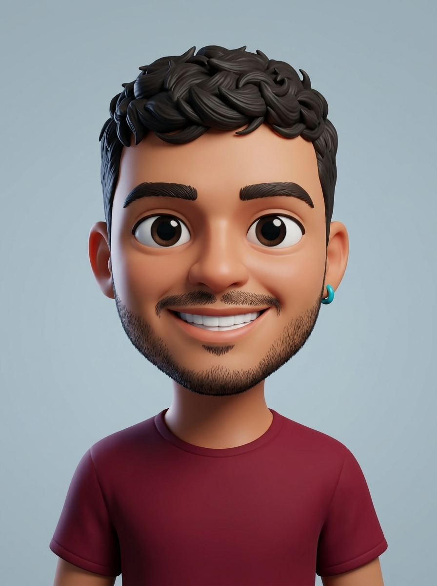

Creamos tecnología para resolver problemas reales.
Diseñamos y construimos software a medida, aplicaciones y ecosistemas digitales escalables. Porque no creemos que las empresas deban adaptarse al software: hacemos que el software se adapte a tu empresa.
De una necesidad nace una solución. De una solución, un producto.
Somos una organización de desarrollo tecnológico que identifica necesidades reales en empresas y las convierte en productos y soluciones digitales escalables.
Detección de Necesidad
Analizamos a fondo los cuellos de botella y requerimientos reales antes de proponer cualquier solución técnica.
Análisis y Estrategia
Diseñamos arquitecturas optimizadas tomando decisiones basadas en datos, conocimiento y viabilidad técnica.
Código de Excelencia
Construimos productos digitales con estándares modernos, alta velocidad de respuesta y seguridad de nivel empresarial.
Evolución Sostenible
Las soluciones no terminan con el lanzamiento: maduran y crecen acompañando la expansión de tu negocio.
No usamos moldes fijos: diseñamos la arquitectura según tu necesidad
Cada organización tiene procesos, ritmos y objetivos únicos. Explora distintos escenarios de negocio y cambia el nivel de alcance para ver cómo adaptamos las piezas técnicas y la tecnología a tu realidad.
Ideal cuando tu equipo necesita dejar atrás hojas de cálculo dispersas o tareas manuales con una plataforma interna rápida, clara y ajustada exactamente a tu flujo diario.
Panel Operativo Unificado
Web ResponsivaInterfaz limpia por roles para ventas, operaciones o administración sin curva de aprendizaje.
Núcleo de Reglas de tu Negocio
Monolito ModularEstados de pedidos, autorizaciones, cálculos y validaciones hechas para tu operación.
Base de Datos Centralizada
Fuente ÚnicaInformación estructurada en el motor ideal para tu caso, con respaldos automáticos y trazabilidad.
Si mañana tu operación crece o necesitas integrar nuevos sistemas, esta base modular permite evolucionar al siguiente nivel sin desechar ni reescribir lo construido.
Soluciones digitales que generan valor tangible
Desarrollo tecnológico integral para organizaciones que buscan eficiencia, diferenciación y escalabilidad.
Desarrollo de Software a Medida
Plataformas y herramientas creadas específicamente para el flujo de trabajo de tu empresa, eliminando la rigidez del software comercial estándar.
Plataformas y Productos Digitales
Conceptualización y construcción de aplicaciones web, móviles y plataformas multi-empresa preparadas para crecer en volumen de usuarios sin degradación de rendimiento.
Arquitectura Cloud y DevOps
Estructuramos infraestructuras en la nube resilientes, despliegues continuos automatizados y monitorización técnica proactiva 24/7.
Automatización y Datos
Sincronizamos información entre sistemas, eliminamos tareas manuales repetitivas y creamos paneles interactivos para la toma de decisiones ágil.
Consultoría y Diagnóstico Digital
Evaluación de sistemas existentes, auditoría de código, optimización de rendimiento y planificación de modernización tecnológica.
Capacitación y Autonomía
Transferencia técnica rigurosa y acompañamiento formativo para que los equipos internos gestionen y aprovechen al máximo las soluciones desarrolladas.
Nuestros Valores Fundamentales
Criterios de ingeniería y ética profesional que guían cada proyecto que emprendemos.
Innovación
Buscamos nuevas y mejores formas de resolver problemas, cuestionando suposiciones y creando valor diferencial.
Inteligencia
Tomamos decisiones técnicas basadas en conocimiento fundamentado, análisis riguroso y datos comprobables.
Cercanía
Entendemos a fondo la realidad y cultura de cada cliente antes de diseñar o construir cualquier software.
Excelencia
Desarrollamos soluciones confiables, funcionales y técnicamente sostenibles a largo plazo.
Evolución
El software no se estanca tras el lanzamiento: evoluciona al ritmo de las nuevas oportunidades del negocio.
El Equipo Detrás de PentaCore
Un equipo horizontal de ingeniería donde todos participamos de principio a fin en el análisis, desarrollo y despliegue de cada solución.
Ana Lucía Grillo
Ingeniera de SoftwareDesarrollo integral de aplicaciones, diseño de interfaces modernas y construcción de productos digitales centrados en la experiencia de uso.

Camilo Lemos
Ingeniero de SoftwareConstrucción de plataformas a medida, lógica de negocio en backend y estructuración eficiente de bases de datos y servicios API.
Fabián Sanchez
Ingeniero de SoftwareImplementación de sistemas escalables, automatización de procesos operativos y despliegue continuo sobre infraestructura cloud.
Leonardo Cerquera
Ingeniero de SoftwareDiseño de arquitecturas de software adaptables, integración de ecosistemas digitales y optimización de rendimiento de extremo a extremo.
Cuéntanos tu necesidad. Nosotros diseñamos la solución.
Estamos disponibles para analizar tu proyecto, definir la arquitectura técnica o construir una plataforma digital a la medida de tu organización.
Iniciar Conversación
Completa el formulario para estructurar tu requerimiento técnico inicial.